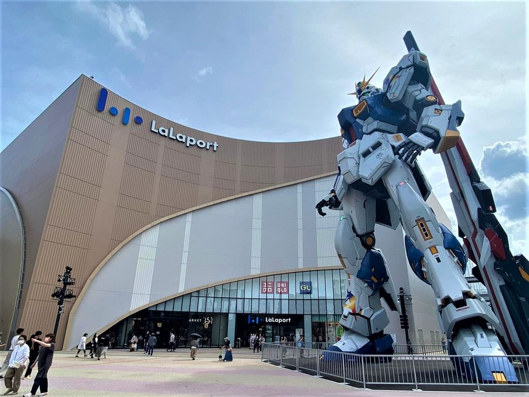
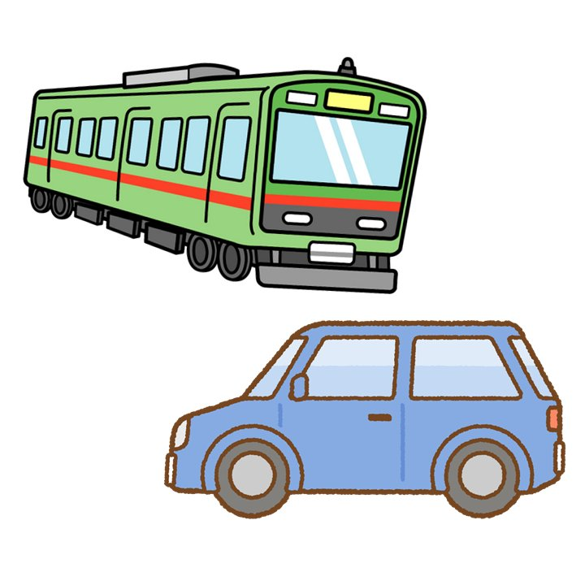

← 前の日
佐賀大和IC→（長崎道）→鳥栖JCT→（九州道）→太宰府IC

到着 09:00過ぎ

・ららぽーとに駐車→竹下駅→（鹿児島本線）→博多駅→（福岡市地下鉄）・車のまま移動※2日目の行動と合わせて決定
各自の飛行機の時間に合わせて自由行動
📍おすすめスポット博多駅／みずほPayPayドーム／大濠公園／福岡市博物館／大名・渡辺通／筥崎宮／さざえさん通り など(※妖怪ウォッチ聖地巡礼もおすすめ)
🍽️グルメ・ラーメン博多一双／Shin-Shin／博多一幸舎／ふくちゃんラーメン／元祖長浜屋／だるま など・その他餃子のテムジン／めんちゃんこ亭／牧のうどん／肉肉うどん／資さんうどん など
→ 福岡市の聖地巡礼スポット一覧／→ 福岡市のグルメ一覧
各自の飛行機・新幹線の時間に合わせて解散